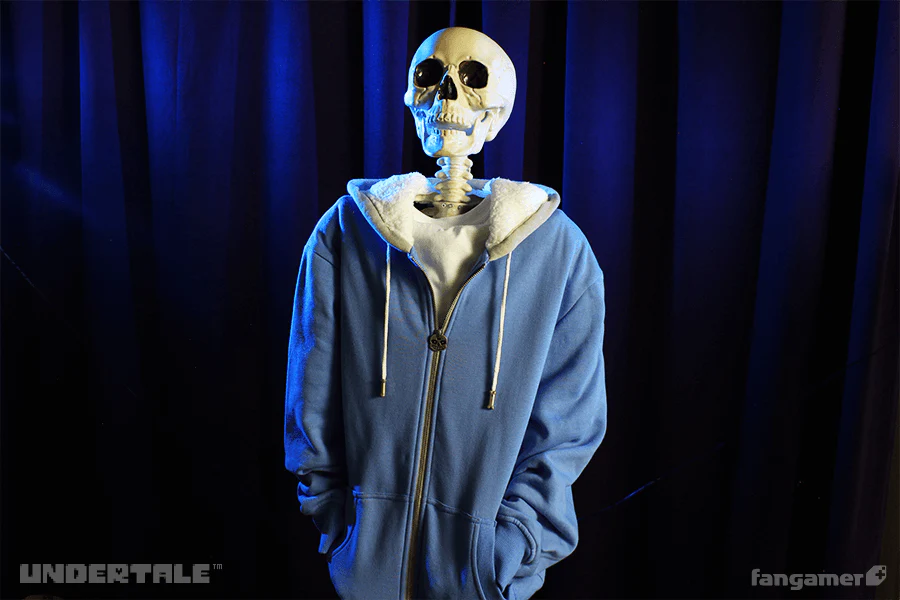

sans el esqueleto
sans es un personaje del videojuego undertale, es un personaje
bastante conocido en la industria del videojuego.
Su primera aparicion fue en el 2015 y podias encontrarte con el en
las afueras de snowdin, donde solo podias ver su silueta
luego de un apreton de manos el muestra su verdadera forma
la cual es de un esqueleto ligeramente gordo y de apariencia floja
con unas pantuflas rosas y una chaqueta de color azul.
el personaje de sans se populariso por la ruta genocida de undertale en la cual el
era el jefe final de la ruta, y uno de los jefes mas dificiles
en la industria de todos los videojuegos, era el unico jefe de todo el juego
capaz de esquivar un ataque, con comentarios que rompen la cuarta pared
junto al hecho de que solo tiene 1 de daño y 1 de hp, basto para que se hiciera
un meme, era un personaje de burla para los jugadores.
Datos curiosos
- Si tu checas a sans, su descripcion dice lo siguiete "1 ATQ y 1 DF, el enemigo mas debil"
Una obvia burla hacia los jugadores que mueren una y otra vez frente al
enemigo mas debil y perezoso de todos, mientras que el solo cuenta chistes - En la ruta pacifista, si tu vuelves a tu punto de guardado varias veces seguidas, podras hacer
que sans te de la llave de su habitacion, sans se dara cuenta de lo que haces
asi que te dara las respuestas de las preguntas que te dara en la proxima carga - El nombre del rayo de sans en la ruta genocida nunca fue dicho dentro del juego
pero dentro de los archivos se descubrio que su nombre era "Gaster Blaster",
lo que ademas de ser un juego de palabras tambien es una referencia al personaje
de gaster, que puede ser encontrado en los archivos del juego como el sprite de
"Mystery Man", o Hombre Misterioso en español, por eso los fans creen que
sans tiene alguna relacion con el personaje de Gaster, y otros creen que gaster
fue el creador del arma que usa sans en la ruta genocida.